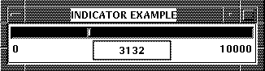
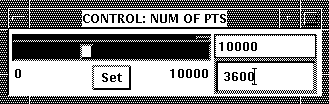
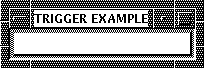

The combination of indicators, controls and triggers allows the user to control the execution of his data acquisition or analysis program from Histo-Scope. For instance, should peculiar results come out of diagnostic histograms, certain code paths can be internally enabled or disabled, or the job gracefully terminated.
An indicator is a scalar value set by a process to indicate the value of a variable or condition. When selected for viewing from the Main Window, an Indicator Window pops up:

Figure 18. Indicator Window
The Indicator window by default shows the minimum and maximum values of the indicator (at the far left and right), and the value of the indicator is displayed in the middle of the window in a rectangular box. If the indicator has not yet been given a value, or has been reset, the words * not set * will be displayed in the box.
Use the right mouse button to pop up the plot settings for indicators: Help, Show Range, Automatic Update, Update, and Close. See the section Adjusting Plot Settings in this guide for detailed explanations of plot settings.

Figure 19. Control Window
To set the value of the variable, first either type a value in the text field in the lower right corner of the control window, or use the slider to enter the value. Then, press the Set button. When the value is read and accepted by the connected process, the current value (in the top right corner) and the indicator above the slider will change to reflect the requested value. In the connected process, controls can be read by calling hs_read_control.
Controls displayed from files or a disconnected process cannot be set.
Use the right mouse button to pop up the plot settings for controls: Help, Show Range, and Close. See the section Adjusting Plot Settings in this guide for detailed explanations of plot settings.

Figure 20. Trigger Window
Each time the button in the trigger window is pressed, a message is sent to the process and, if the code in the process properly checks the trigger, an associated routine or code fragment will be executed. Until the trigger is read by the connected process, the button will read "Pending." If the button is pressed several times before it is read, it will show a count of unprocessed presses. In the connected process, triggers can be detected by calling hs_check_trigger.